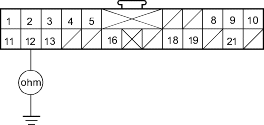
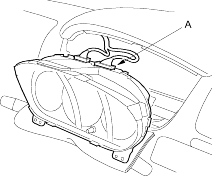
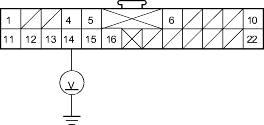

- Turn the ignition switch ON (II), and check to see if the other indicator lights come on (brake system, etc).
Do the other indicator lights come on?
YES - Go to step 2.
NO - Go to step 9.
- Turn the ignition switch OFF, then disconnect the C2 connector (A) from the gauge assembly.

- Check resistance between the No. 12 terminal of C2 connector and body ground. There should be 0 - 1.0 ohm.
C2 CONNECTOR

Wire side of female terminals
Is resistance as specified?
YES - Go to step 4.
NO - Open in the BLK wire of dashboard wire harness A or faulty body ground terminal (G501). If the body ground terminal is OK, replace dashboard wire harness A. 
- Disconnect the C1 connector (A) from the gauge assembly.

- Check for voltage between the No. 14 terminal of C1 connector and body ground within the first 6 seconds after turning the ignition switch ON (II). There should be 8.5 V or less.
C1 CONNECTOR

Wire side of female terminals
Is voltage as specified?
YES - Faulty SRS indicator light circuit in the gauge assembly; replace the gauge assembly.
NO - Go to step 6.
- Turn the ignition switch OFF.